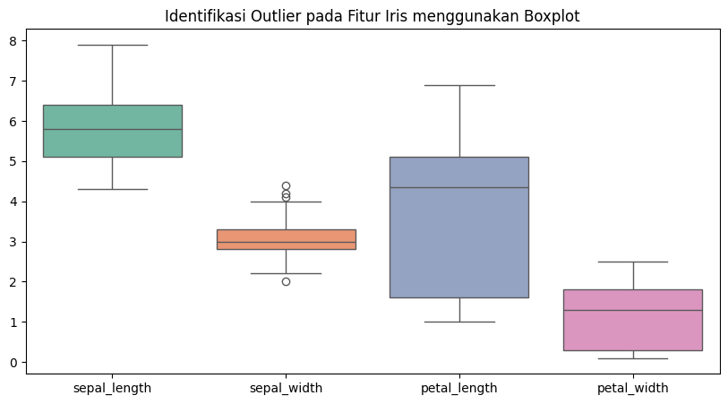

Memahami Karakteristik Data (Data Understanding)#
Dalam Data Mining, memahami karakteristik data atau Statistik Deskriptif adalah langkah awal yang krusial. Tujuannya adalah untuk mendapatkan gambaran umum tentang distribusi dan sebaran data yang kita miliki.
1. Ukuran Pemusatan (Central Tendency)#
A. Mean (Rata-rata)#
Mean adalah nilai rata-rata dari seluruh data. Nilai ini sangat dipengaruhi oleh nilai ekstrem (outlier). $\(\bar{x} = \frac{\sum_{i=1}^{n} x_i}{n}\)\( **Keterangan:** \)\bar{x}\( adalah rata-rata, \)x_i\( adalah data ke-\)i\(, dan \)n$ adalah jumlah data.
B. Median (Nilai Tengah)#
Median adalah nilai tengah dari sekumpulan data yang telah diurutkan. $\(Me = x_{\frac{n+1}{2}} \text{ (Ganjil)} \quad Me = \frac{x_{\frac{n}{2}} + x_{\frac{n}{2} + 1}}{2} \text{ (Genap)}\)$
C. Modus (Mode)#
Modus adalah nilai yang paling sering muncul dalam suatu kumpulan data.
2. Ukuran Penyebaran (Dispersion)#
A. Range (Rentang)#
B. Standar Deviasi (Simpangan Baku)#
Keterangan: \(s\) menggambarkan seberapa besar penyimpangan data dari rata-ratanya.
3. Eksplorasi Dataset Iris#
Dataset ini memiliki karakteristik sebagai berikut:
Jumlah Data: 150 data (ID 1 - 150).
Komposisi Kelas: Terdapat 3 jenis spesies (Setosa, Versicolor, Virginica), masing-masing berjumlah 50 data.
Fitur Utama: Memiliki 4 fitur numerik:
sepal_length,sepal_width,petal_length, danpetal_width.
Analisis Kualitas Data#
Missing Values: Berdasarkan pengecekan, dataset ini memiliki 0 missing values. Seluruh kolom terisi lengkap.
Outliers (Pencilan): Identifikasi dilakukan dengan visualisasi Boxplot untuk melihat data yang menyimpang jauh dari rata-rata.
import pandas as pd
import seaborn as sns
import matplotlib.pyplot as plt
# 1. Load Data
df = pd.read_csv('IRIS.csv')
# 2. Statistik Deskriptif per Kelas (Spesies)
print("Statistik Deskriptif Tiap Spesies:")
display(df.groupby('species').describe().T)
# 3. Visualisasi Boxplot
plt.figure(figsize=(10, 5))
sns.boxplot(data=df, palette="Set2")
plt.title("Identifikasi Outlier pada Fitur Iris menggunakan Boxplot")
plt.show()
Statistik Deskriptif Tiap Spesies:
| species | Iris-setosa | Iris-versicolor | Iris-virginica | |
|---|---|---|---|---|
| sepal_length | count | 50.000000 | 50.000000 | 50.000000 |
| mean | 5.006000 | 5.936000 | 6.588000 | |
| std | 0.352490 | 0.516171 | 0.635880 | |
| min | 4.300000 | 4.900000 | 4.900000 | |
| 25% | 4.800000 | 5.600000 | 6.225000 | |
| 50% | 5.000000 | 5.900000 | 6.500000 | |
| 75% | 5.200000 | 6.300000 | 6.900000 | |
| max | 5.800000 | 7.000000 | 7.900000 | |
| sepal_width | count | 50.000000 | 50.000000 | 50.000000 |
| mean | 3.418000 | 2.770000 | 2.974000 | |
| std | 0.381024 | 0.313798 | 0.322497 | |
| min | 2.300000 | 2.000000 | 2.200000 | |
| 25% | 3.125000 | 2.525000 | 2.800000 | |
| 50% | 3.400000 | 2.800000 | 3.000000 | |
| 75% | 3.675000 | 3.000000 | 3.175000 | |
| max | 4.400000 | 3.400000 | 3.800000 | |
| petal_length | count | 50.000000 | 50.000000 | 50.000000 |
| mean | 1.464000 | 4.260000 | 5.552000 | |
| std | 0.173511 | 0.469911 | 0.551895 | |
| min | 1.000000 | 3.000000 | 4.500000 | |
| 25% | 1.400000 | 4.000000 | 5.100000 | |
| 50% | 1.500000 | 4.350000 | 5.550000 | |
| 75% | 1.575000 | 4.600000 | 5.875000 | |
| max | 1.900000 | 5.100000 | 6.900000 | |
| petal_width | count | 50.000000 | 50.000000 | 50.000000 |
| mean | 0.244000 | 1.326000 | 2.026000 | |
| std | 0.107210 | 0.197753 | 0.274650 | |
| min | 0.100000 | 1.000000 | 1.400000 | |
| 25% | 0.200000 | 1.200000 | 1.800000 | |
| 50% | 0.200000 | 1.300000 | 2.000000 | |
| 75% | 0.300000 | 1.500000 | 2.300000 | |
| max | 0.600000 | 1.800000 | 2.500000 |

4. Mengukur Jarak (Distance Measurement)#
Mengukur jarak digunakan untuk mengetahui seberapa mirip (similarity) antara dua objek data.
A. Formula Jarak Numerik#
Manhattan Distance (\(L_1\)): $\(d(x,y) = \sum_{i=1}^{n} |x_i - y_i|\)\( **Keterangan:** Menjumlahkan selisih absolut dari setiap fitur. Contoh: \)|f1_{id1} - f1_{id2}| + |f2_{id1} - f2_{id2}|$.
Euclidean Distance (\(L_2\)): $\(d(x,y) = \sqrt{\sum_{i=1}^{n} (x_i - y_i)^2}\)$ Keterangan: Jarak garis lurus antar dua titik (menggunakan pangkat 2).
Supremum Distance (\(L_\infty\)): $\(d(x,y) = \max_i |x_i - y_i|\)$ Keterangan: Mengambil nilai selisih terbesar dari satu fitur saja.
B. Implementasi Distance Matrix#
Matriks jarak memungkinkan kita melihat jarak antar objek secara sekaligus, seperti pada aplikasi Orange.
from scipy.spatial import distance
from scipy.spatial import distance_matrix
# Ambil data ID 1 dan ID 2
id1 = df.iloc[0, :4].values
id2 = df.iloc[1, :4].values
print(f"Hasil Jarak Manhattan : {distance.cityblock(id1, id2):.4f}")
print(f"Hasil Jarak Euclidean : {distance.euclidean(id1, id2):.4f}")
print(f"Hasil Jarak Supremum : {distance.chebyshev(id1, id2):.4f}")
# Distance Matrix untuk 5 data pertama
print("\nDistance Matrix (5 Data Pertama):")
dist_mat = pd.DataFrame(distance_matrix(df.iloc[:5, :4], df.iloc[:5, :4]))
dist_mat.index = dist_mat.columns = [f"ID {i+1}" for i in range(5)]
display(dist_mat)
Hasil Jarak Manhattan : 0.7000
Hasil Jarak Euclidean : 0.5385
Hasil Jarak Supremum : 0.5000
Distance Matrix (5 Data Pertama):
| ID 1 | ID 2 | ID 3 | ID 4 | ID 5 | |
|---|---|---|---|---|---|
| ID 1 | 0.000000 | 0.538516 | 0.509902 | 0.648074 | 0.141421 |
| ID 2 | 0.538516 | 0.000000 | 0.300000 | 0.331662 | 0.608276 |
| ID 3 | 0.509902 | 0.300000 | 0.000000 | 0.244949 | 0.509902 |
| ID 4 | 0.648074 | 0.331662 | 0.244949 | 0.000000 | 0.648074 |
| ID 5 | 0.141421 | 0.608276 | 0.509902 | 0.648074 | 0.000000 |
5. Tipe Data Campuran & Integrasi Data#
Pengukuran Jarak Data Campuran#
Untuk data campuran (Numerik, Kategorikal, Biner), kita menggunakan konsep Gower Distance:
Atribut Nominal: Jarak 0 jika sama, 1 jika beda.
Atribut Numerik: Jarak = \(|x - y| / (max - min)\).
Atribut Biner: Dihitung berdasarkan kesamaan atribut (Ya/Tidak).
Integrasi Sumber Data#
Data dalam eksplorasi ini ditarik dan diintegrasikan dari:
Relational Database: Menggunakan library
SQLAlchemyuntuk koneksi ke PostgreSQL dan MySQL.File Eksternal: Format JSON dan CSV.
Web Statis: Penguatan metadata melalui referensi web.